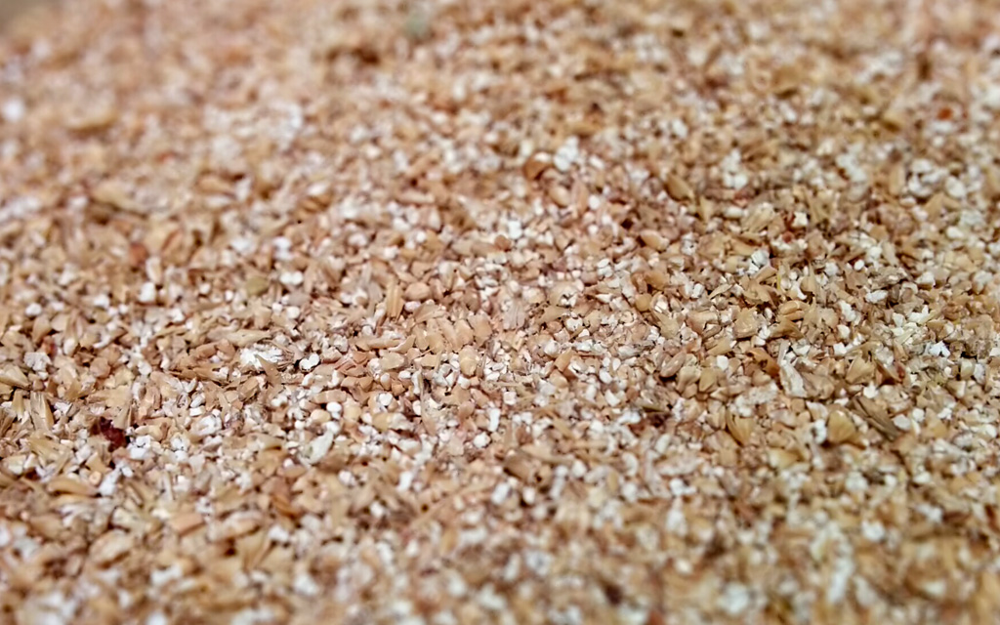

Advanced Homebrewing - Recipe Design Workshop
Corey Burns
coreyaburns@gmail.com
Advanced Homebrewing - Recipe Design Workshop
Brought to you by
Corey Burns

Overview of Workshop
Base malts / Specialty Malts
Caramelized vs Roasted Malts
Hops
IBU’s, Bitterness Ratio, Hop Characteristics
Yeast
Steps in creating a solid recipe
BJCP Guidelines
Practice creating a recipe
Questions and Discussion
Create your recipe!
Malt
Base Malts
Generally consist between 80 to 100% of the mash
Two-row, Six-row, Pale, Pilsner, Maris Otter
Depending on the style can also include
Wheat, Munich, Vienna
Specialty Malts
Two types of specialty malts caramelized and toasted/roasted
Provide flavor, color, body.
Specialty Malts
Caramelized Malts
Malster takes malt without crushing it and hydrates it.
Causes the enzymes to degrade the starch of the kernel. Which mashes each individual kernel.
Then dries it at a given temperature causing the sugars to crystallize then heats it.
Caramelized Malts
Caramel/Crystal Malts
Color Rating (Lovibond) 10 to 120
Sweet mild caramel to pronounced caramel, burnt sugar, raisin flavors, dark fruits
Crystal Malts are caramel malts produced in a roaster whereas,
Caramel Malts are kiln and roasted.
All crystal malts are caramel malts but not all caramel malts are crystal malts.
Caramelized Malts
Carapils (Dextrin Malt)
Contributes body with very little flavor. Helps out with head retention.
Use up to 5% of the grain bill.
Must be mashed - will contribute starch haze if steeped.
Specialty Malts
Roasted Malts
Did not undergo an in-kernel mash process.
Color derives from heat generated in the kilning process.
Roasted Malts
Chocolate Malt
Warm nutty, chocolate-like flavor
Use up to a pound in porters, stouts and dark lagers
Roasted Barley
Dry roasted coffee-like flavors
No more than 10% in stouts and porters
Can lead to a sharp acrid and acidic flavor
Tips with Specialty Malts
Gnaw on some of the specialty malts to determine their flavor to you.
A little goes a long way. Especially with black patent!
More specialty grains will yield a higher the final gravity. Due to sugars that can't fully convert.
Roasted / Toasted specialty grains need to be mashed. (Except those used in porters / stouts other dark beers)
Malt Resources
Find more information on malts at:
Beer Tools - Ingredients
Brew your own - Specialty Grains
Briess Caramel Malts
Malts - John Palmer
Hops
Hops
Hops Provide
Bitterness | Aroma | Flavor | Preservation
Hop Bitterness
Brewers are interested in the alpha acids of the hop
Isomerization - during the boil
Hop Characteristics
Herbal, Spicy, Floral, Citrus, Piney, Grassy
Hops
International Bittering Units (IBU)
Measure of the concentration of iso-alpha acids (parts per million)
Light Lagers have the lowest bitterness units ~10
Pale ales can have up to 50
High Gravity Ales will generally have a higher IBU to combat the malt sweetness
Hops
Bitterness Ratio (BU:GU)
50 IBU’s in a light lager vs 50 IBU’s in an Imperial Stout
30 IBU in a 1.040 OG
30 / 40 = 0.75 (a bitter beer .5 is balanced)
Bitterness Chart
Hop Tips
Break out of the 60min 5 min hop additions
Dry hopping at least 1-2oz for great aroma in a 5 gal batch
Aroma hops are added
In the boil (within 20 min)
Steeping / Hopstand
Dry Hopping
Hop Resources
BYO Hop Resource
Homebrewstuff Hop Profiles
Beer Advocate - Hop Guide
Yeast
Make the finished beer what it is!
Ale vs Lager yeast
Contribute flavor
Malty, hoppy, fruity, clovey, sweet, dry, neutral, clean
Numerous factors influence the flavor
Fermentation temperature, Oxygen levels, Pitch Rate
Yeast Resources
Brew your own - Yeast Strains Chart
White Labs Yeast
Wyeast Style Guide
Successful Tips in creating a solid recipe
Determine what style of beer you want to make
Check out guidelines on
BJCP
Do you want it in the style or out of the style?
Note the commercial examples listed on BJCP
Have a key characteristic in mind for the beer and focus on that!
Brewing Software
Brewtoad
BeerSmith
ProMash
Beer Tools
Strange Brew
Beer Recipator
Brewtarget
Let's create a recipe
Let's practice using BJCP guidelines to design an original recipe.
Determine the key characteristic.
In general at least 80% base malt
Don't go too overboard with specialty malts especially first few recipes.
Consider creating a SMASH brew
Mouthfeel Tips - Increasing the Body
Most cases you are looking for a higher final gravity
(not an incomplete fermentation)
Achieve that with more unfermentables
unfermentable sugars
highly caramelized sugars - Caramel and Dextrin (Carapils)
proteins
moderately-modified malts / wheat / oats
Consider a different yeast strain
More information on
How to Brew
Additional Tips
Increasing head retention
Carapils, Flaked Wheat
Clean everything well! Your kettle to the glass can hurt your head retention. As well as, what you are currently eating.
Version 2
Don't go and change everything in the recipe, start by making one single change. It could be the base malt or which hop you used.
If it turned out amazing, brew it again!